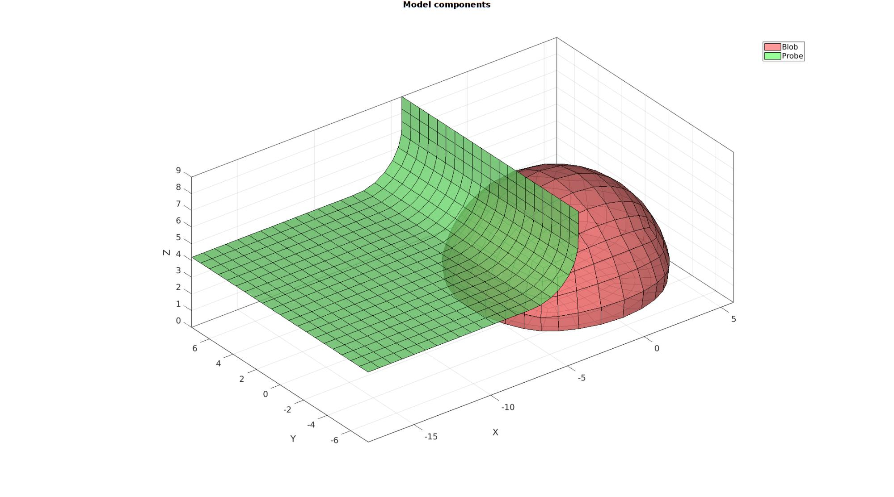

DEMO_febio_0035_blob_shear_contact_hex8
Below is a demonstration for:
- Building geometry for a hemi-spherical blob with hexahedral elements which is being sheared by a rigid wall. This demo consists off:
- Defining the boundary conditions
- Coding the febio structure
- Running the model
- Importing and visualizing the displacement results
Contents
- Keywords
- Plot settings
- Control parameters
- Creating model geometry and mesh
- Creating rigid body shear surface
- Join model node sets
- Get local material axes
- Get contact surfaces
- Setup boundary conditions
- Defining the FEBio input structure
- Quick viewing of the FEBio input file structure
- Exporting the FEBio input file
- Running the FEBio analysis
- Import FEBio results
Keywords
- febio_spec version 3.0
- febio, FEBio
- indentation
- contact, sliding, friction
- rigid body constraints
- hexahedral elements, hex8, hex20
- quadrilaterial elements, quad4, quad8
- shell elements
- sphere
- static, solid
- hyperelastic, Ogden
- hyperelastic, Fung orthotropic
- displacement logfile
clear; close all; clc;
Plot settings
fontSize=15; faceAlpha1=0.8; faceAlpha2=0.3; markerSize=40; markerSize2=15; lineWidth=3;
Control parameters
% Path names defaultFolder = fileparts(fileparts(mfilename('fullpath'))); savePath=fullfile(defaultFolder,'data','temp'); % Defining file names febioFebFileNamePart='tempModel'; febioFebFileName=fullfile(savePath,[febioFebFileNamePart,'.feb']); %FEB file name febioLogFileName=fullfile(savePath,[febioFebFileNamePart,'.txt']); %FEBio log file name febioLogFileName_disp=[febioFebFileNamePart,'_disp_out.txt']; %Log file name for exporting displacement % Hemi-sphere parameters hemiSphereRadius=6; numElementsMantel=4; smoothEdge=1; solidElementType='hex8';%'hex20'; membraneThickness=0.1; % Ground plate parameters plateRadius=1.3*hemiSphereRadius; % Probe parameters probeWidth=3*hemiSphereRadius; filletProbe=hemiSphereRadius/2; %Fillet radius % Define probe displacement probeDisplacement=hemiSphereRadius*2; probeOverlapFactor=0.3; probeLength=hemiSphereRadius*2; % Material parameter set l=1e-3; lt=1000*l; m=1e-3; mt=1000*m; mu1=mt; mu2=mt; mu3=m; lambda11=lt; lambda22=lt; lambda12=lt; lambda33=l; lambda23=l; lambda13=l; [E1,E2,E3,G12,G23,G31,v12,v23,v31]=lameInvertHookeOrthotropic(mu1,mu2,mu3,lambda11,lambda22,lambda33,lambda12,lambda23,lambda13); materialPropertiesFung.E1=E1; materialPropertiesFung.E2=E2; materialPropertiesFung.E3=E3; materialPropertiesFung.G12=G12; materialPropertiesFung.G23=G23; materialPropertiesFung.G31=G31; materialPropertiesFung.v12=v12; materialPropertiesFung.v23=v23; materialPropertiesFung.v31=v31; materialPropertiesFung.c=10; materialPropertiesFung.k=1000*mean([G12 G23 G31]); %Ogden parameters materialPropertiesOgden.c1=1e-3; %Shear-modulus-like parameter materialPropertiesOgden.m1=2; %Material parameter setting degree of non-linearity materialPropertiesOgden.k=1000*materialPropertiesOgden.c1; %Bulk modulus % FEA control settings numTimeSteps=25; max_refs=25; %Max reforms max_ups=0; %Set to zero to use full-Newton iterations opt_iter=15; %Optimum number of iterations max_retries=25; %Maximum number of retires symmetric_stiffness=0; min_residual=1e-20; step_size=1/numTimeSteps; dtmin=(1/numTimeSteps)/100; %Minimum time step size dtmax=(1/numTimeSteps); %Maximum time step size %Contact parameters contactPenalty=0.01; laugon=0; minaug=1; maxaug=10; fric_coeff=0; max_traction=0;
Creating model geometry and mesh
%Control settings optionStruct.sphereRadius=hemiSphereRadius; optionStruct.coreRadius=optionStruct.sphereRadius/2; optionStruct.numElementsMantel=numElementsMantel; optionStruct.numElementsCore=optionStruct.numElementsMantel*2; optionStruct.outputStructType=2; optionStruct.makeHollow=0; optionStruct.cParSmooth.n=25; % %Creating sphere [meshStruct]=hexMeshHemiSphere(optionStruct); % Access model element and patch data Fb_blob=meshStruct.facesBoundary; Cb_blob=meshStruct.boundaryMarker; V_blob=meshStruct.nodes; E_blob=meshStruct.elements; F_blob=element2patch(E_blob);
pointSpacingBlob=max(patchEdgeLengths(Fb_blob,V_blob)); %Smoothen edges if smoothEdge==1 %Get rigid region ind=1:1:size(V_blob,1); %Indices for all nodes indRigid1=find(ismember(ind,Fb_blob(Cb_blob==2,:)) & ~ismember(ind,Fb_blob(Cb_blob==1,:))); %Indices for new bottom surface nodes indRigid2=find(ismember(ind,Fb_blob(Cb_blob==1,:)) & ~ismember(ind,Fb_blob(Cb_blob==2,:))); %Indices for new bottom surface nodes indRigid=[indRigid1(:); indRigid2(:);]; %Smoothing cPar.Method='HC'; cPar.n=250; cPar.RigidConstraints=indRigid; [Vb_blob]=patchSmooth(F_blob,V_blob,[],cPar); indSmooth=unique(F_blob(:)); V_blob(indSmooth,:)=Vb_blob(indSmooth,:); %Fix color data with new bottom surface Cb_blob=ones(size(Cb_blob)); Cb_blob(all(ismember(Fb_blob,indRigid1),2))=2; meshStruct.nodes=V_blob; end if strcmp(solidElementType,'hex20') [E_blob,V_blob,~,~,Fb_blob]=hex8_hex20(E_blob,V_blob,{},Fb_blob); [Fb_blob_plot]=element2patch(Fb_blob,[],'quad8'); meshStruct.elements=E_blob; meshStruct.nodes=V_blob; meshStruct.Fb=Fb_blob_plot; shellElementType='quad8'; else Fb_blob_plot=Fb_blob; shellElementType='quad4'; end
Visualize blob mesh
hFig=cFigure; subplot(1,2,1); hold on; hp=gpatch(Fb_blob_plot,V_blob,Cb_blob,'k',1); hp.Marker='.'; hp.MarkerSize=markerSize2; % patchNormPlot(Fb_blob,V_blob); % plotV(V_blob(indRigid,:),'g.','MarkerSize',25); axisGeom(gca,fontSize); colormap(gjet); icolorbar; camlight headlight; hs=subplot(1,2,2); hold on; title('Cut view of solid mesh','FontSize',fontSize); optionStruct.hFig=[hFig hs]; gpatch(Fb_blob_plot,V_blob,'kw','none',0.25); meshView(meshStruct,optionStruct); axisGeom(gca,fontSize); drawnow;

Creating rigid body shear surface
pointSpacingProbe=pointSpacingBlob/2; %Sketching side profile d=hemiSphereRadius*cos(asin(1-probeOverlapFactor)); x=[-probeLength-hemiSphereRadius -d -d]; y=[0 0 0]; z=[hemiSphereRadius*(1-probeOverlapFactor) hemiSphereRadius*(1-probeOverlapFactor) hemiSphereRadius*1.5]; V_probe_curve_sketch=[x(:) y(:) z(:)]; %Fillet sketch np=100; %Number of points used to construct each fillet edge [V_probe_curve]=filletCurve(V_probe_curve_sketch,filletProbe,np,0); numPointsProbeCurve=ceil(max(pathLength(V_probe_curve))/pointSpacingProbe); [V_probe_curve] = evenlySampleCurve(V_probe_curve,numPointsProbeCurve,'pchip',0); % Extruding curve % controlParametersExtrude.pointSpacing=pointSpacingProbe; controlParametersExtrude.depth=hemiSphereRadius*2.5; controlParametersExtrude.numSteps=ceil(controlParametersExtrude.depth/pointSpacingProbe); controlParametersExtrude.numSteps=controlParametersExtrude.numSteps+iseven(controlParametersExtrude.numSteps); %Force uneven controlParametersExtrude.patchType='quad'; controlParametersExtrude.dir=0; controlParametersExtrude.n=[0 1 0]; controlParametersExtrude.closeLoopOpt=0; [F_probe,V_probe]=polyExtrude(V_probe_curve,controlParametersExtrude); F_probe=fliplr(F_probe); %Invert face orientation so normals point to blob if strcmp(solidElementType,'hex20') [F_probe,V_probe]=quad4_quad8(F_probe,V_probe); [F_probe_plot]=element2patch(F_probe,[],'quad8'); else F_probe_plot=F_probe; end center_of_mass_probe=mean(V_probe,1);
Visualizing probe mesh
cFigure; hold on; title('The probe surface mesh','fontSize',fontSize); gpatch(Fb_blob_plot,V_blob,'kw','none',0.5); hl(1)=plotV(V_probe_curve_sketch,'k.-.','lineWidth',3,'MarkerSize',25); hl(2)=plotV(V_probe_curve,'r-','lineWidth',3,'MarkerSize',25); hl(3)=gpatch(F_probe_plot,V_probe,'gw','k',1); % hl(3).Marker='.'; % hl(3).MarkerSize=markerSize2; legend(hl,{'Sketched probe curve','Rounded probe curve','Probe surface mesh'}); clear hl; axisGeom(gca,fontSize); camlight headlight; drawnow;

Join model node sets
V=[V_blob; V_probe]; F_probe=F_probe+size(V_blob,1); F_probe_plot=F_probe_plot+size(V_blob,1);
Visualizing model
cFigure; hold on; gtitle('Model components',fontSize); hl(1)=gpatch(Fb_blob_plot,V,'rw','k',0.8); hl(2)=gpatch(F_probe_plot,V,'gw','k',0.8); legend(hl,{'Blob','Probe'}); clear hl; axisGeom(gca,fontSize); camlight headlight; drawnow;
Get local material axes
[N3,Vn]=patchNormal(Fb_blob_plot,V);
[N1,N2]=vectorOrthogonalPair(N3); %Get orthogonal vector pair
Visualizing axes
cFigure; hold on; gtitle('Local material axes',fontSize); hl(1)=gpatch(Fb_blob_plot,V,'w','k',1); hl(2)=quiverVec(Vn,N1,pointSpacingBlob,'y'); hl(3)=quiverVec(Vn,N2,pointSpacingBlob,'g'); hl(4)=quiverVec(Vn,N3,pointSpacingBlob,'b'); legend(hl,{'Blob','1st axis','2nd axis','3rd axis'}); clear hl; axisGeom(gca,fontSize); camlight headlight; drawnow;

Get contact surfaces
Visualize contact surfaces
cFigure; title('Probe blob contact pair','fontsize',fontSize); hl(1)=gpatch(F_probe_plot,V,'rw','k',1); patchNormPlot(F_probe_plot,V); hl(2)=gpatch(Fb_blob_plot,V,'gw','k',1); patchNormPlot(Fb_blob_plot,V); legend(hl,{'Master','Slave'}); clear hl; axisGeom(gca,fontSize); camlight headlight; drawnow;

Setup boundary conditions
bcSupportList=unique(Fb_blob(Cb_blob==2,:));

Visualize boundary condition sets
cFigure; hold on; title('Boundary conditions ','fontsize',fontSize); gpatch(F_probe_plot,V,'kw','none',0.2); gpatch(Fb_blob_plot,V,'kw','none',0.2); hl(1)=plotV(V(bcSupportList,:),'k.','MarkerSize',markerSize); legend(hl,{'Supported nodes'}); clear hl; axisGeom(gca,fontSize); camlight headlight; drawnow;

Defining the FEBio input structure
See also febioStructTemplate and febioStruct2xml and the FEBio user manual.
%Get a template with default settings [febio_spec]=febioStructTemplate; %febio_spec version febio_spec.ATTR.version='3.0'; %Module section febio_spec.Module.ATTR.type='solid'; %Control section febio_spec.Control.analysis='STATIC'; febio_spec.Control.time_steps=numTimeSteps; febio_spec.Control.step_size=1/numTimeSteps; febio_spec.Control.solver.max_refs=max_refs; febio_spec.Control.solver.max_ups=max_ups; febio_spec.Control.solver.symmetric_stiffness=0; febio_spec.Control.time_stepper.dtmin=dtmin; febio_spec.Control.time_stepper.dtmax=dtmax; febio_spec.Control.time_stepper.max_retries=max_retries; febio_spec.Control.time_stepper.opt_iter=opt_iter; %Material section materialName1='Material1'; febio_spec.Material.material{1}.ATTR.name=materialName1; febio_spec.Material.material{1}.ATTR.type='Ogden'; febio_spec.Material.material{1}.ATTR.id=1; febio_spec.Material.material{1}.c1=materialPropertiesOgden.c1; febio_spec.Material.material{1}.m1=materialPropertiesOgden.m1; febio_spec.Material.material{1}.c2=materialPropertiesOgden.c1; febio_spec.Material.material{1}.m2=-materialPropertiesOgden.m1; febio_spec.Material.material{1}.k=materialPropertiesOgden.k; materialName2='Material2'; febio_spec.Material.material{2}.ATTR.name=materialName2; febio_spec.Material.material{2}.ATTR.type='Fung orthotropic'; febio_spec.Material.material{2}.ATTR.id=2; febio_spec.Material.material{2}.E1=materialPropertiesFung.E1; febio_spec.Material.material{2}.E2=materialPropertiesFung.E2; febio_spec.Material.material{2}.E3=materialPropertiesFung.E3; febio_spec.Material.material{2}.G12=materialPropertiesFung.G12; febio_spec.Material.material{2}.G23=materialPropertiesFung.G23; febio_spec.Material.material{2}.G31=materialPropertiesFung.G31; febio_spec.Material.material{2}.v12=materialPropertiesFung.v12; febio_spec.Material.material{2}.v23=materialPropertiesFung.v23; febio_spec.Material.material{2}.v31=materialPropertiesFung.v31; febio_spec.Material.material{2}.c=materialPropertiesFung.c; febio_spec.Material.material{2}.k=materialPropertiesFung.k; materialName3='Material3'; febio_spec.Material.material{3}.ATTR.name=materialName3; febio_spec.Material.material{3}.ATTR.type='rigid body'; febio_spec.Material.material{3}.ATTR.id=3; febio_spec.Material.material{3}.density=1; febio_spec.Material.material{3}.center_of_mass=center_of_mass_probe; %Mesh section % -> Nodes febio_spec.Mesh.Nodes{1}.ATTR.name='nodeSet_all'; %The node set name febio_spec.Mesh.Nodes{1}.node.ATTR.id=(1:size(V,1))'; %The node id's febio_spec.Mesh.Nodes{1}.node.VAL=V; %The nodel coordinates % -> Elements partName1='Part1'; febio_spec.Mesh.Elements{1}.ATTR.name=partName1; %Name of this part febio_spec.Mesh.Elements{1}.ATTR.type=solidElementType; %Element type febio_spec.Mesh.Elements{1}.elem.ATTR.id=(1:1:size(E_blob,1))'; %Element id's febio_spec.Mesh.Elements{1}.elem.VAL=E_blob; %The element matrix partName2='Part2'; febio_spec.Mesh.Elements{2}.ATTR.name=partName2; %Name of this part febio_spec.Mesh.Elements{2}.ATTR.type=shellElementType; %Element type febio_spec.Mesh.Elements{2}.elem.ATTR.id=size(E_blob,1)+(1:1:size(Fb_blob,1))'; %Element id's febio_spec.Mesh.Elements{2}.elem.VAL=Fb_blob; partName3='Part3'; febio_spec.Mesh.Elements{3}.ATTR.name=partName3; %Name of this part febio_spec.Mesh.Elements{3}.ATTR.type=shellElementType; %Element type febio_spec.Mesh.Elements{3}.elem.ATTR.id=size(E_blob,1)+size(Fb_blob,1)+(1:1:size(F_probe,1))'; %Element id's febio_spec.Mesh.Elements{3}.elem.VAL=F_probe; % -> NodeSets nodeSetName1='bcSupportList'; febio_spec.Mesh.NodeSet{1}.ATTR.name=nodeSetName1; febio_spec.Mesh.NodeSet{1}.node.ATTR.id=bcSupportList(:); %MeshDomains section febio_spec.MeshDomains.SolidDomain.ATTR.name=partName1; febio_spec.MeshDomains.SolidDomain.ATTR.mat=materialName1; febio_spec.MeshDomains.ShellDomain{1}.ATTR.name=partName2; febio_spec.MeshDomains.ShellDomain{1}.ATTR.mat=materialName2; febio_spec.MeshDomains.ShellDomain{2}.ATTR.name=partName3; febio_spec.MeshDomains.ShellDomain{2}.ATTR.mat=materialName3; % % -> Surfaces surfaceName1='contactSurface1'; febio_spec.Mesh.Surface{1}.ATTR.name=surfaceName1; febio_spec.Mesh.Surface{1}.(shellElementType).ATTR.id=(1:1:size(F_probe,1))'; febio_spec.Mesh.Surface{1}.(shellElementType).VAL=F_probe; surfaceName2='contactSurface2'; febio_spec.Mesh.Surface{2}.ATTR.name=surfaceName2; febio_spec.Mesh.Surface{2}.(shellElementType).ATTR.id=(1:1:size(Fb_blob(Cb_blob==1,:),1))'; febio_spec.Mesh.Surface{2}.(shellElementType).VAL=Fb_blob(Cb_blob==1,:); % -> Surface pairs contactPairName1='Contact1'; febio_spec.Mesh.SurfacePair{1}.ATTR.name=contactPairName1; febio_spec.Mesh.SurfacePair{1}.primary=surfaceName1; febio_spec.Mesh.SurfacePair{1}.secondary=surfaceName2; %MeshData section % -> ElementData febio_spec.MeshData.ElementData{1}.ATTR.var='shell thickness'; febio_spec.MeshData.ElementData{1}.ATTR.elem_set=partName2; febio_spec.MeshData.ElementData{1}.elem.ATTR.lid=(1:1:size(Fb_blob,1))'; febio_spec.MeshData.ElementData{1}.elem.VAL=membraneThickness.*ones(size(Fb_blob)); %MeshData section % -> ElementData febio_spec.MeshData.ElementData{2}.ATTR.elem_set=partName2; febio_spec.MeshData.ElementData{2}.ATTR.var='mat_axis'; for q=1:1:size(N1,1) febio_spec.MeshData.ElementData{2}.elem{q}.ATTR.lid=q; febio_spec.MeshData.ElementData{2}.elem{q}.a=N1(q,:); febio_spec.MeshData.ElementData{2}.elem{q}.d=N2(q,:); end %Boundary condition section % -> Fix boundary conditions febio_spec.Boundary.bc{1}.ATTR.type='fix'; febio_spec.Boundary.bc{1}.ATTR.node_set=nodeSetName1; febio_spec.Boundary.bc{1}.dofs='x,y,z'; %Rigid section % -> Prescribed rigid body boundary conditions febio_spec.Rigid.rigid_constraint{1}.ATTR.name='RigidFix_1'; febio_spec.Rigid.rigid_constraint{1}.ATTR.type='fix'; febio_spec.Rigid.rigid_constraint{1}.rb=3; febio_spec.Rigid.rigid_constraint{1}.dofs='Ry,Rz,Ru,Rv,Rw'; febio_spec.Rigid.rigid_constraint{2}.ATTR.name='RigidPrescribe'; febio_spec.Rigid.rigid_constraint{2}.ATTR.type='prescribe'; febio_spec.Rigid.rigid_constraint{2}.rb=3; febio_spec.Rigid.rigid_constraint{2}.dof='Rx'; febio_spec.Rigid.rigid_constraint{2}.value.ATTR.lc=1; febio_spec.Rigid.rigid_constraint{2}.value.VAL=probeDisplacement; febio_spec.Rigid.rigid_constraint{2}.relative=0; %Contact section febio_spec.Contact.contact{1}.ATTR.surface_pair=contactPairName1; febio_spec.Contact.contact{1}.ATTR.type='sliding-elastic'; febio_spec.Contact.contact{1}.two_pass=1; febio_spec.Contact.contact{1}.laugon=laugon; febio_spec.Contact.contact{1}.tolerance=0.2; febio_spec.Contact.contact{1}.gaptol=0; febio_spec.Contact.contact{1}.minaug=minaug; febio_spec.Contact.contact{1}.maxaug=maxaug; febio_spec.Contact.contact{1}.search_tol=0.01; febio_spec.Contact.contact{1}.search_radius=0.1; febio_spec.Contact.contact{1}.symmetric_stiffness=0; febio_spec.Contact.contact{1}.auto_penalty=1; febio_spec.Contact.contact{1}.penalty=contactPenalty; febio_spec.Contact.contact{1}.fric_coeff=fric_coeff; %LoadData section % -> load_controller febio_spec.LoadData.load_controller{1}.ATTR.id=1; febio_spec.LoadData.load_controller{1}.ATTR.type='loadcurve'; febio_spec.LoadData.load_controller{1}.interpolate='LINEAR'; febio_spec.LoadData.load_controller{1}.points.point.VAL=[0 0; 1 1]; %Output section % -> log file febio_spec.Output.logfile.ATTR.file=febioLogFileName; febio_spec.Output.logfile.node_data{1}.ATTR.file=febioLogFileName_disp; febio_spec.Output.logfile.node_data{1}.ATTR.data='ux;uy;uz'; febio_spec.Output.logfile.node_data{1}.ATTR.delim=',';
Quick viewing of the FEBio input file structure
The febView function can be used to view the xml structure in a MATLAB figure window.
febView(febio_spec); %Viewing the febio file
Exporting the FEBio input file
Exporting the febio_spec structure to an FEBio input file is done using the febioStruct2xml function.
febioStruct2xml(febio_spec,febioFebFileName); %Exporting to file and domNode
Running the FEBio analysis
To run the analysis defined by the created FEBio input file the runMonitorFEBio function is used. The input for this function is a structure defining job settings e.g. the FEBio input file name. The optional output runFlag informs the user if the analysis was run succesfully.
febioAnalysis.run_filename=febioFebFileName; %The input file name febioAnalysis.run_logname=febioLogFileName; %The name for the log file febioAnalysis.disp_on=1; %Display information on the command window febioAnalysis.runMode='external';%'internal'; [runFlag]=runMonitorFEBio(febioAnalysis);%START FEBio NOW!!!!!!!!
%%%%%%%%%%%%%%%%%%%%%%%%%%%%%%%%%%%%%%%%%%%%%%%%%%%%%%%%%%%%%%%%%%%%%%%%%%%
--------> RUNNING/MONITORING FEBIO JOB <-------- 16-Dec-2020 11:57:07
FEBio path: /home/kevin/FEBioStudio/bin/febio3
# Attempt removal of existing log files 16-Dec-2020 11:57:07
* Removal succesful 16-Dec-2020 11:57:07
# Attempt removal of existing .xplt files 16-Dec-2020 11:57:07
* Removal succesful 16-Dec-2020 11:57:07
# Starting FEBio... 16-Dec-2020 11:57:07
Max. total analysis time is: Inf s
* Waiting for log file creation 16-Dec-2020 11:57:07
Max. wait time: 30 s
* Log file found. 16-Dec-2020 11:57:07
# Parsing log file... 16-Dec-2020 11:57:07
number of iterations : 1 16-Dec-2020 11:57:07
number of reformations : 1 16-Dec-2020 11:57:07
------- converged at time : 0.04 16-Dec-2020 11:57:07
number of iterations : 1 16-Dec-2020 11:57:07
number of reformations : 1 16-Dec-2020 11:57:07
------- converged at time : 0.08 16-Dec-2020 11:57:07
number of iterations : 1 16-Dec-2020 11:57:08
number of reformations : 1 16-Dec-2020 11:57:08
------- converged at time : 0.12 16-Dec-2020 11:57:08
number of iterations : 1 16-Dec-2020 11:57:08
number of reformations : 1 16-Dec-2020 11:57:08
------- converged at time : 0.16 16-Dec-2020 11:57:08
number of iterations : 8 16-Dec-2020 11:57:09
number of reformations : 8 16-Dec-2020 11:57:09
------- converged at time : 0.2 16-Dec-2020 11:57:09
number of iterations : 13 16-Dec-2020 11:57:11
number of reformations : 13 16-Dec-2020 11:57:11
------- converged at time : 0.238462 16-Dec-2020 11:57:11
number of iterations : 13 16-Dec-2020 11:57:13
number of reformations : 13 16-Dec-2020 11:57:13
------- converged at time : 0.275554 16-Dec-2020 11:57:13
number of iterations : 10 16-Dec-2020 11:57:15
number of reformations : 10 16-Dec-2020 11:57:15
------- converged at time : 0.311426 16-Dec-2020 11:57:15
number of iterations : 12 16-Dec-2020 11:57:16
number of reformations : 12 16-Dec-2020 11:57:16
------- converged at time : 0.348124 16-Dec-2020 11:57:16
number of iterations : 10 16-Dec-2020 11:57:17
number of reformations : 10 16-Dec-2020 11:57:17
------- converged at time : 0.385212 16-Dec-2020 11:57:17
number of iterations : 10 16-Dec-2020 11:57:18
number of reformations : 10 16-Dec-2020 11:57:18
------- converged at time : 0.422883 16-Dec-2020 11:57:18
number of iterations : 12 16-Dec-2020 11:57:20
number of reformations : 12 16-Dec-2020 11:57:20
------- converged at time : 0.461019 16-Dec-2020 11:57:20
number of iterations : 12 16-Dec-2020 11:57:21
number of reformations : 12 16-Dec-2020 11:57:21
------- converged at time : 0.499375 16-Dec-2020 11:57:21
number of iterations : 11 16-Dec-2020 11:57:23
number of reformations : 11 16-Dec-2020 11:57:23
------- converged at time : 0.536443 16-Dec-2020 11:57:23
number of iterations : 12 16-Dec-2020 11:57:27
number of reformations : 12 16-Dec-2020 11:57:27
------- converged at time : 0.568224 16-Dec-2020 11:57:27
number of iterations : 10 16-Dec-2020 11:57:28
number of reformations : 10 16-Dec-2020 11:57:28
------- converged at time : 0.600975 16-Dec-2020 11:57:28
number of iterations : 10 16-Dec-2020 11:57:29
number of reformations : 10 16-Dec-2020 11:57:29
------- converged at time : 0.635176 16-Dec-2020 11:57:29
number of iterations : 9 16-Dec-2020 11:57:30
number of reformations : 9 16-Dec-2020 11:57:30
------- converged at time : 0.670537 16-Dec-2020 11:57:30
number of iterations : 8 16-Dec-2020 11:57:31
number of reformations : 8 16-Dec-2020 11:57:31
------- converged at time : 0.706826 16-Dec-2020 11:57:31
number of iterations : 8 16-Dec-2020 11:57:32
number of reformations : 8 16-Dec-2020 11:57:32
------- converged at time : 0.743856 16-Dec-2020 11:57:32
number of iterations : 8 16-Dec-2020 11:57:32
number of reformations : 8 16-Dec-2020 11:57:32
------- converged at time : 0.781481 16-Dec-2020 11:57:32
number of iterations : 7 16-Dec-2020 11:57:33
number of reformations : 7 16-Dec-2020 11:57:33
------- converged at time : 0.819581 16-Dec-2020 11:57:33
number of iterations : 7 16-Dec-2020 11:57:34
number of reformations : 7 16-Dec-2020 11:57:34
------- converged at time : 0.858061 16-Dec-2020 11:57:34
number of iterations : 7 16-Dec-2020 11:57:35
number of reformations : 7 16-Dec-2020 11:57:35
------- converged at time : 0.896845 16-Dec-2020 11:57:35
number of iterations : 7 16-Dec-2020 11:57:36
number of reformations : 7 16-Dec-2020 11:57:36
------- converged at time : 0.935872 16-Dec-2020 11:57:36
number of iterations : 8 16-Dec-2020 11:57:37
number of reformations : 8 16-Dec-2020 11:57:37
------- converged at time : 0.975093 16-Dec-2020 11:57:37
number of iterations : 8 16-Dec-2020 11:57:38
number of reformations : 8 16-Dec-2020 11:57:38
------- converged at time : 1 16-Dec-2020 11:57:38
Elapsed time : 0:00:31 16-Dec-2020 11:57:38
N O R M A L T E R M I N A T I O N
# Done 16-Dec-2020 11:57:38
%%%%%%%%%%%%%%%%%%%%%%%%%%%%%%%%%%%%%%%%%%%%%%%%%%%%%%%%%%%%%%%%%%%%%%%%%%%
Import FEBio results
if 1%runFlag==1 %i.e. a succesful run
Importing nodal displacements from a log file
dataStruct=importFEBio_logfile(fullfile(savePath,febioLogFileName_disp),1,1);
%Access data
N_disp_mat=dataStruct.data; %Displacement
timeVec=dataStruct.time; %Time
%Create deformed coordinate set
V_DEF=N_disp_mat+repmat(V,[1 1 size(N_disp_mat,3)]);
Plotting the simulated results using anim8 to visualize and animate deformations
DN_magnitude=sqrt(sum(N_disp_mat(:,:,end).^2,2)); %Current displacement magnitude % Create basic view and store graphics handle to initiate animation hf=cFigure; hold on; gtitle([febioFebFileNamePart,': Press play to animate']); hp1=gpatch(Fb_blob_plot,V_DEF(:,:,end),DN_magnitude,'k',1); %Add graphics object to animate hp1.FaceColor='interp'; hp2=gpatch(F_probe_plot,V_DEF(:,:,end),'kw','none',0.5); %Add graphics object to animate % gpatch(Fb_all,V,0.5*ones(1,3),'none',0.25); %A static graphics object axisGeom(gca,fontSize); colormap(gjet(250)); colorbar; caxis([0 max(DN_magnitude(Fb_blob_plot(:)))]); caxis manual; axis(axisLim(V_DEF)); %Set axis limits statically camlight headlight; view(15,8); drawnow; % Set up animation features animStruct.Time=timeVec; %The time vector for qt=1:1:size(N_disp_mat,3) %Loop over time increments DN_magnitude=sqrt(sum(N_disp_mat(:,:,qt).^2,2)); %Current displacement magnitude %Set entries in animation structure animStruct.Handles{qt}=[hp1 hp1 hp2]; %Handles of objects to animate animStruct.Props{qt}={'Vertices','CData','Vertices'}; %Properties of objects to animate animStruct.Set{qt}={V_DEF(:,:,qt),DN_magnitude,V_DEF(:,:,qt)}; %Property values for to set in order to animate end anim8(hf,animStruct); %Initiate animation feature drawnow;

end

GIBBON www.gibboncode.org
Kevin Mattheus Moerman, gibbon.toolbox@gmail.com
GIBBON footer text
License: https://github.com/gibbonCode/GIBBON/blob/master/LICENSE
GIBBON: The Geometry and Image-based Bioengineering add-On. A toolbox for image segmentation, image-based modeling, meshing, and finite element analysis.
Copyright (C) 2006-2020 Kevin Mattheus Moerman
This program is free software: you can redistribute it and/or modify it under the terms of the GNU General Public License as published by the Free Software Foundation, either version 3 of the License, or (at your option) any later version.
This program is distributed in the hope that it will be useful, but WITHOUT ANY WARRANTY; without even the implied warranty of MERCHANTABILITY or FITNESS FOR A PARTICULAR PURPOSE. See the GNU General Public License for more details.
You should have received a copy of the GNU General Public License along with this program. If not, see http://www.gnu.org/licenses/.